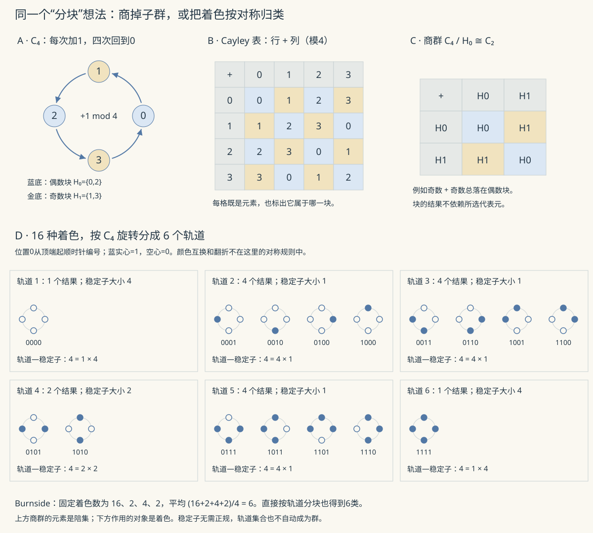

抽代 I · 群论
抽象代数把"数的运算"抽象成"集合 + 运算满足的公理"，研究结构本身。第一站是群——"对称性的数学"：任何对象的全体对称操作天然成群。本页走完群论主干：子群、Lagrange 定理、正规子群与商群、同态基本定理——最后这个定理的形态你在高代 IV（商空间）见过，还会在环论再见，它是代数学的通用语法。
1. 群：定义与例子库

定义 \((G, \cdot)\)：封闭、结合律、单位元 \(e\)、每元有逆。交换者称 Abel 群。阶 \(|G|\) = 元素个数。
例子库（比定义重要）：\((\mathbb{Z}, +)\)；\((\mathbb{Z}_n, +)\) 模 \(n\) 加法；\((\mathbb{Z}_p^*, \times)\)（\(p\) 素）；对称群 \(S_n\)（\(n\) 元全体置换，\(|S_n| = n!\)，\(n \geq 3\) 非交换——置换是群论的"原型物种"：Cayley 定理说任何群都同构于某置换群的子群）；二面体群 \(D_n\)（正 \(n\) 边形的旋转+翻折，\(2n\) 个对称）；\(GL_n(\mathbb{R})\)（可逆矩阵，高代的老朋友以群身份再就业）。
幂与阶：元素 \(a\) 的阶 = 使 \(a^k = e\) 的最小正整数 \(k\)。
2. 子群、陪集与 Lagrange 定理
子群判据：\(H \leq G \iff H\) 非空且 \(a, b \in H \Rightarrow ab^{-1} \in H\)（一步验证式）。循环群 \(\langle a\rangle = \{a^k\}\)：由一个元素生成——结构完全分类：无限循环 \(\cong \mathbb{Z}\)、\(n\) 阶循环 \(\cong \mathbb{Z}_n\)（"最简单的群"，其子群、生成元全部透明）。
陪集：\(aH = \{ah : h \in H\}\)。关键事实：陪集要么相等要么不交、大小全等于 \(|H|\)——\(G\) 被 \(H\) 的陪集均匀切块。
定理（Lagrange） 有限群的子群阶数整除群的阶：\(|H| \,\big|\, |G|\)。 证明（两行）：陪集分划 \(G\)，每块 \(|H|\) 个元素（\(h \mapsto ah\) 是双射），故 \(|G| = |H| \times\) 块数。\(\blacksquare\)
立收三个推论：元素的阶整除 \(|G|\)；素数阶群必循环（且无非平凡子群）；Fermat 小定理 \(a^{p-1} \equiv 1 \pmod p\)——在 \(\mathbb{Z}_p^*\)（阶 \(p-1\)）中用"元素阶整除群阶"，一行拿下（数论定理被群论一句话收编的名场面）。
3. 正规子群、商群与同态基本定理
群同态：\(\varphi(ab) = \varphi(a)\varphi(b)\)；核 \(\ker\varphi = \varphi^{-1}(e)\)。
正规子群 \(N \trianglelefteq G\)：\(gNg^{-1} = N\)（左右陪集相同）。为什么需要它：想让陪集全体 \(\{gN\}\) 继承乘法 \((aN)(bN) = abN\)，良定义恰好等价于正规性——正规性不是装饰，是商结构的存在条件（Abel 群一切子群正规，故高代 IV 的商空间不用操这份心）。得商群 \(G/N\)。
定理（同态基本定理）
——"同态 = 商掉核 + 嵌入像"。与高代 IV 的 \(V/\ker \cong \mathrm{im}\)（线性映射版）逐字同构；环论、模论还有同款。读法：核度量"压缩了多少"，商群就是"压缩后的世界"；找商群 \(G/N\) 长什么样的标准方法——造一个以 \(N\) 为核的满同态，像是什么商群就是什么（例 2 演示）。
4. 群作用一瞥（对称性的用法）
群 \(G\) 作用于集合 \(X\)：\(g\cdot x\) 满足结合与单位。轨道-稳定子定理：\(|G| = |\mathrm{orbit}(x)| \times |\mathrm{stab}(x)|\)（Lagrange 的作用版）。Burnside 引理：轨道数 = \(\frac{1}{|G|}\sum_{g}|\mathrm{Fix}(g)|\)（"平均不动点数"）——数"本质不同的着色/项链"的组合神器（例 3）。
🔗 衔接：对称性 → 守恒律（Noether 定理的物理纲领）；CNN 的平移等变性（ai 课 05 讲）是"网络与平移群作用可交换"——等变网络（群卷积）把本页思想工程化；密码学的舞台设在 \(\mathbb{Z}_p^*\) 与椭圆曲线群（下一页 RSA）。
5. 典型例题
例 1（判子群+求阶） \(\mathbb{Z}_{12}\) 中 \(\langle 8 \rangle = \{0, 8, 4\}\)——3 阶循环子群；元素 8 的阶 \(= \frac{12}{\gcd(8,12)} = 3\)（循环群元素阶公式）。
例 2（商群辨认） \(G = \mathbb{Z},\ N = 5\mathbb{Z}\)：造满同态 \(\varphi: \mathbb{Z} \to \mathbb{Z}_5\)（模 5），\(\ker = 5\mathbb{Z}\) ⇒ \(\mathbb{Z}/5\mathbb{Z} \cong \mathbb{Z}_5\)。——"模运算 = 商群"的正式身份。
例 3（Burnside 数项链） 3 颗珠子染 2 色的项链（旋转群 \(C_3\) 作用）：\(\frac{1}{3}(|Fix(e)| + |Fix(r)| + |Fix(r^2)|) = \frac{1}{3}(8 + 2 + 2) = 4\) 种本质不同的项链。枚举验证：全同 ×2、两同一异 ×2 ✓。\(\blacksquare\)
下一页：两个运算的结构——环与域，多项式环认祖归宗，再看一眼 Galois 理论的山顶。